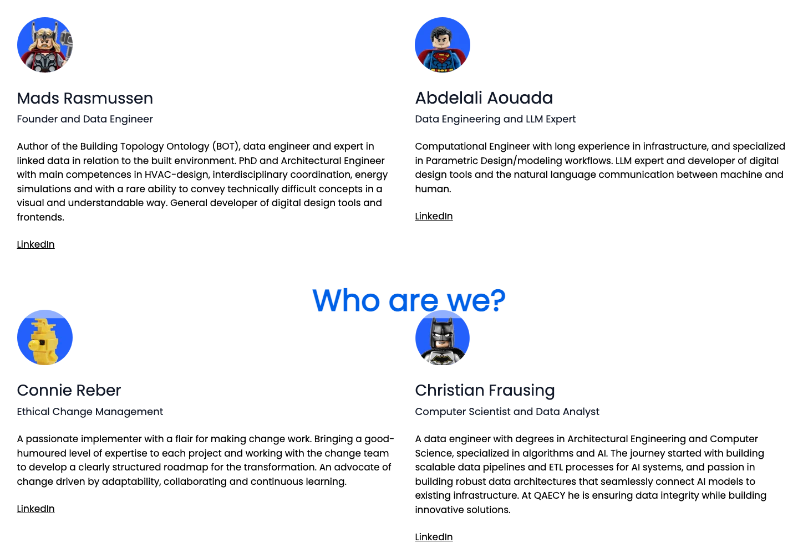
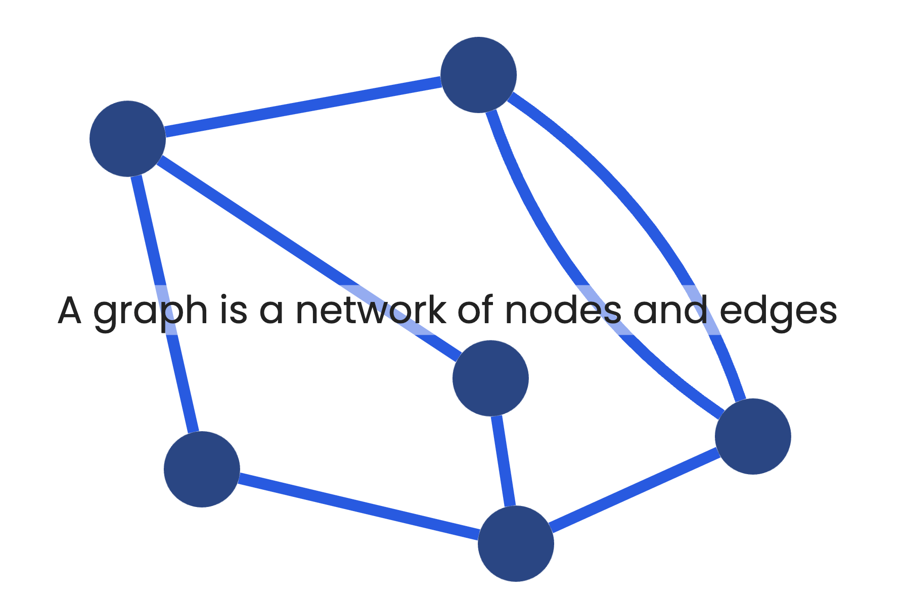
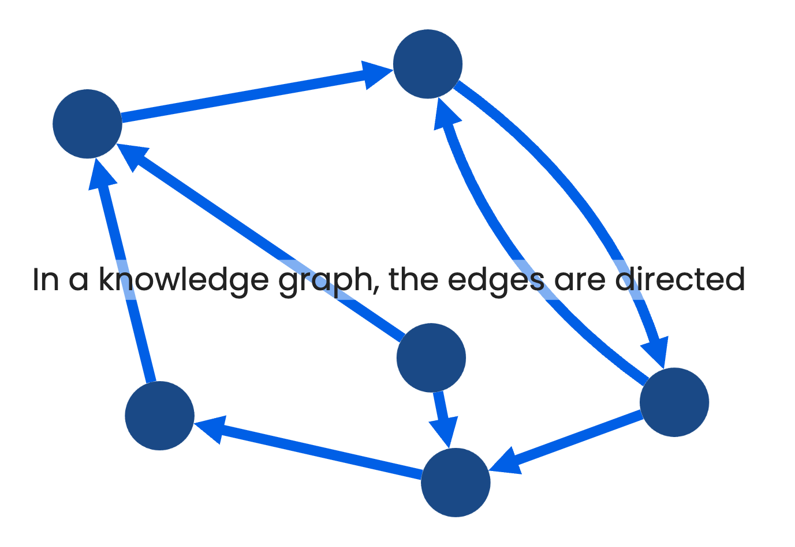
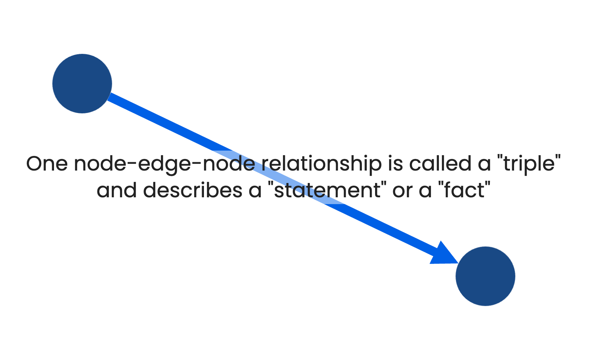
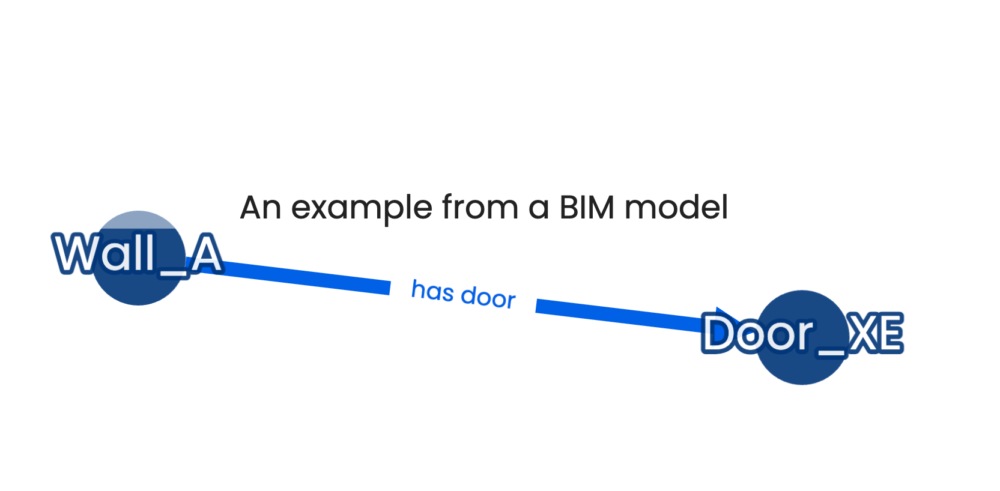
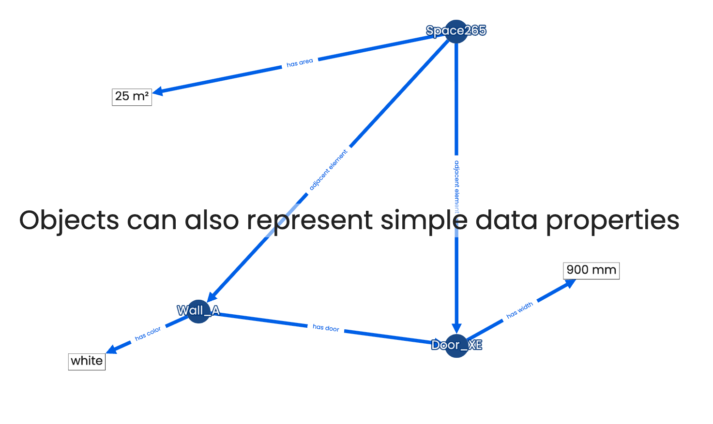

Let's acknowledge that there is no single source of truth
- and deal with it
Link to slides: https://bit.ly/4iE7Pac
Who are we?
The AEC industry has a fragmented and decentralized nature
Designing, maintaining and operating a built asset involves expertise from a myriad of professions
Therefore, there are many perspectives on each and every subset of the project

What do you see?

What the architect sees

What the ICE engineer sees

What the low voltage engineer sees

What the HVAC engineer sees
Today's BIM doesn't handle this nature well

BIM is siloed.
One discipline, one model
A silo-free BIM would focus on the relationships and could be decentralized


This would be a complete decentralization of BIM which is obviously not easy to achieve.
But a step on the way would be to make what we have more connected...
The reality
No project has ONE BIM model
Not all information is
(or should ever be) in the
BIM model
- Reports
- Meeting minutes
- e-mails
- Calculations
- Images from site registrations
- Point cloud scans
- Reference images
- Sketches
- Norms & Regulations
Information is scattered across different files and often on different document management systems (DMSs)
"Is this the most recent version of that plan drawing"
"what documents describe this pump?"
Tech intro
At  we
process documents through a set of pipelines
we
process documents through a set of pipelines
In addition to vector embeddings we produce a Knowledge Graph
A graph is a network of nodes and edges
In a knowledge graph, the edges are directed
One node-edge-node relationship is called a "triple" and describes a "statement" or a "fact"
A triple consists of a Subject, a predicate and an Object

An example from a BIM model
As more facts are added, the object in one triple becomes the subject in another

Objects can also represent simple data properties

These graphs can grow to unbelievable sizes.
 consists of 9.5 billion triples!
consists of 9.5 billion triples!


https://bit.ly/48kp6l0

Should I learn to write SPARQL queries?
No! The LLMs already know 😎
How we construct a Single View of Truth
So how would we represent this?

Same input = same output
File Location node id
Provider + file path
File Content node id
file content
Flexibility achieved
- One file can point to several content nodes (different versions) even though its name hasn't changed.
- One content node can point to several cloud locations - one for each file.
Document fragments
Content Node
the most overall representation of a document
Fragment Node
Any subset of a document is referred to as a Fragment and each Fragment can have sub-fragments in any arbitrary depth
Selector Node
Information such as the page number or the fragment position relative to its parent can be expressed using Selectors
Entity References
One process in the
 pipelines is
finding mentionings of Entity References in the
content of any document
pipelines is
finding mentionings of Entity References in the
content of any document

Default entities: Company, Person, Address, Material ...
Other: custom entities defined per project
Selectors can further specify where in the parent fragment it is found. For example specified as a bounding box or with an index range in a text.
All Entity Mentions are unique, so Albert Einstein in one document is not directly considered the same as Albert Einstein or A. Einstein in another document.

Entity Resolution
A follow-up process in the pipelines, is the entity resolution step, where we link similar entities

Canonical Entities
the standardized representations of Named Entities
For Canonical Entities there will be only ONE Albert Einstein that refers to all individual occurrences
The entity resolution process makes use of as much context as possible to resolve to actual unique entities. This means that context is incredibly important!
Context achieved
- Possible to list any Person or Location found across all documents.
- Possible to query the knowledge graph for all documents and fragments that are about a specific Person or Location.
BIM and Entity References
BIM objects are special kinds of Entity Mentions.
The reason why these are not Canonical Entities is that BIM objects are duplicated across models
1st floor in model A and model B might be the same but they might also refer to floors in different buildings
- therefore context is important as always
The topological relationships we define between entities are aligned with the Building Topology Ontology (BOT)
BIM objects can also resolve to Canonical Entities
The same approach is valid for CAD documents, e-mails, images etc.
BIM Siloes vanished
- An object in one model can suddenly have relationships to objects in other models
- No need to establish mechanisms to avoid counting objects twice
- An object can be tracked over time
- A BIM object can have relationships to other entities like people, organizations, documents etc.
Explicit Canonical Entities
Most Canonical Entities in our pipelines are created by AI but it is also possible to define Explicit Canonical Entities in a project.
These are entities that are well defined in the project.
For example from a room programme or a project member list.
The approach can be:
top-down
Here is the list of people - only resolve to those
bottom-up
Show me what you found and I will flag the relevant ones as explicit
Trusted entities
- "List all unique windows in building A and all the properties assigned to them"
- "Show slabs and ventilation equipment on first to second floor"
Learnings and perspectives
- Our Knowledge Graph establishes loose connections between files on different systems
- Not only documents but the fragments within them are linked
- The graph sits on top of existing systems and can be implemented in a non-intrusive way
- The quest of discovery always has a starting point. A type of object, a geo-location, a material, a person or company. The more context we establish between fragments, the better discoverability we can deliver
- We deliver the processing pipelines and expose the result with our
 agent
agent